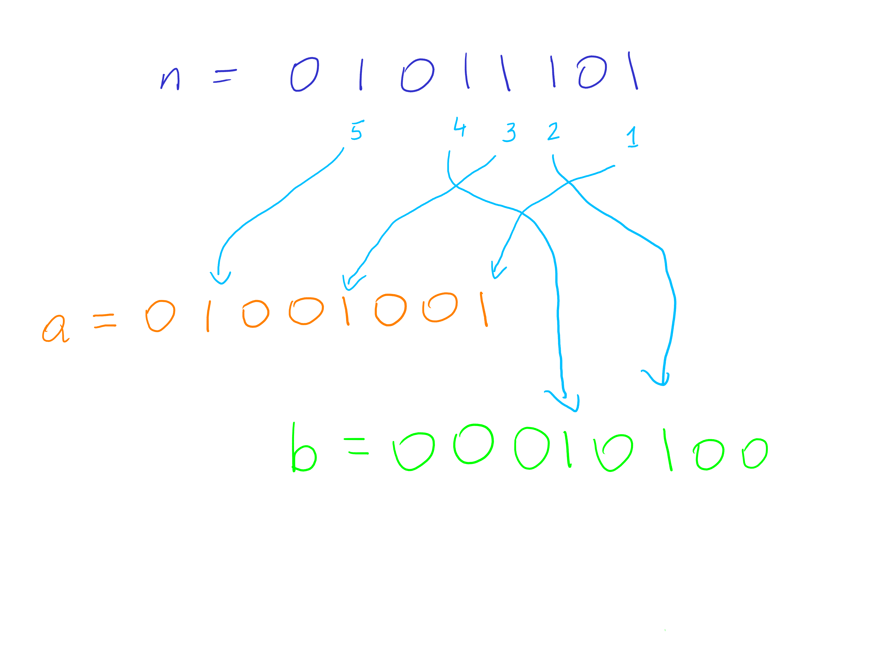

class: center, title-slide <br><br> # CSCI-UA 480: APS ## Algorithmic Problem Solving <br/><br/><br/><br/><br/><br/><br/> ## Fundamentals .author[ Instructor: Joanna Klukowska <br> ] .license[ Copyright 2020 Joanna Klukowska. Unless noted otherwise all content is released under a <br> [Creative Commons Attribution-ShareAlike 4.0 International License](https://creativecommons.org/licenses/by-sa/4.0/).<br> Background image by Stewart Weiss<br>] --- layout:true template: default name: section class: inverse, middle, center --- layout:true template: default name: challenge class: challenge --- layout:true template: default name: poll class: inverse, full-height, center, middle --- layout:true template: default name: breakout class: breakout --- layout:true template:default name:slide class: slide .bottom-left[© Joanna Klukowska. CC-BY-SA.] --- ## This Course - Course website: https://cs.nyu.edu/~joannakl/aps_f26/ This page contains the syllabus as well as loads of links to all other resources and services you will need for this class. - Course message board / discussion: Ed - Online judge: - Gradescope (for homework assignments) - Ed (for in-class assessments) - Codeforces (for outside contest participation) - Brightspace for access to these slides, problem sets, gradebook, exams, ... --- ## Online Contest (5 problems) [Codeforces](https://codeforces.com/) is a site designed with programming competition practice in mind. Throughout the semester you will need to participate in one or more contests scheduled on Codeforces. - Get five problems accepted (can be in one or several different contests). - Your solution has to be submitted to the contest while it is active (not to the archived version of a contest). - The [contest calendar](https://codeforces.com/calendar) is regularly updated with new contests, but do not wait until December to start. -- - We'll post an update with specific details as to which Codeforces contest problems count and how. --- ## Problem Presentations Starting with the next problem set, we will pick a number of students to submit their presentation for a problem. The presentation should be a 15-20 minute recorded video. The content of the presentation: - Brief explanation of the problem. - Demonstration of a few examples (these should not be just the ones from the problem statement itself). - Two or three different approaches to solving the problem with discussion of performance. - Final algorithm presentation using pseudocode (not source code). -- You need to talk through the presentation. Your face needs to be visible in the video. -- If you want to volunteer for a given week, you can do so, but you have to volunteer before the problem set is posted. --- ## Operations Count - How fast your program runs depends on how many things it does: _things_ == operations that the CPU performs on behalf of the program - How many things the computer does depends on how you (the programmer) write the code, what algorithm you choose, etc. -- So, how many operations does this program perform? .left-column2[ ```C++ #include <iostream> using namespace std; int main() { for (int i = 1; i <= 10; i++) { for (int j = 1; j <= 10; j++) { printf("%3d\t", i*j); } printf("\n"); } return 0; } ``` ] --- ## Counting operations is not easy (or possible) - It is hard to figure out what to count; some operations in a high-level programming language may actually be multiple operations on the CPU. - Some CPU operations are faster than others. - Some operations require I/O, which slows them down significantly. -- .big[We need a simplified way of deciding how fast a program runs.] --- template: section # Asymptotic Analysis --- ## Asymptotic Analysis __$O(g(n)) = f(n)$__ There exist positive constants $c$ and $n_0$ such that $0 \le f(n) \le c \cdot g(n)$ for all $n \ge n_0$. -- <hr> __$\Omega(g(n)) = f(n)$__ There exist positive constants $c$ and $n_0$ such that $0 \le c \cdot g(n) \le f(n)$ for all $n \ge n_0$. -- <hr> __$\Theta(g(n)) = f(n)$__ There exist positive constants $c_1$, $c_2$, and $n_0$ such that $0 \le c_1 \cdot g(n) \le f(n) \le c_2 \cdot g(n)$ for all $n \ge n_0$. --- template: challenge ## Challenge For each of the following functions, state if it is $O(N^2)$: - $3 N^2 + 25 N - 20000$ - $0.00001 N^3 + 5 N + 2$ - $3N!$ - $2^N$ - $\log N$ - $1$ --- ## "Abuse" of Big-O People often say "The algorithm is $O(N^3)$ — this is slow." An algorithm that runs in constant time is also technically $O(N^3)$, so the statement above is imprecise. However, this is a common informal shorthand. We usually mean that the algorithm is $\Theta(N^3)$, even though we use Big $O$ notation. --- ## From Big-O to Actual Execution Time - A typical machine executes approximately $10^9$ operations per second (on average, since some operations are slower than others). -- - To determine how long it might take the program to execute on the largest possible input size (specified as part of the constraints for the problem): - Determine the Big-O expression for the maximum $N$. - Divide the result by $10^9$. (This gives an approximation of the execution time in seconds, offering a helpful baseline estimate.) --- ## From Big O-to Actual Execution Time __Example__: Check all pairs of values in the input set - Performance is $O(N^2)$ -- - When $N = 10$, $N^2 = 100$, time = $100 / 10^9 \Rightarrow$ program finishes immediately. -- - When $N = 1000$, $N^2 = 1,000,000$, time = $10^6 / 10^9 \Rightarrow$ program finishes in 0.001s (practically instant). -- - When $N = 10^5$, $N^2 = 10^{10}$, time = $10^{10} / 10^9 \Rightarrow$ program finishes in 10s (too long for most programming competition time limits). --- template: challenge ## Challenge Given a sorted array of values, remove all duplicates. e.g., Given array: `[1, 1, 4, 5, 5, 5, 6, 7, 7, 9, 9, 9, 9]` Revised array: `[1, 4, 5, 6, 7, 9, ?, ?, ?, ?, ?, ?, ?]` (values in remaining spaces are irrelevant) --- template: challenge ## What's the performance of ... Given a sorted array of values, remove all duplicates. ```Java // Assume data is in an ArrayList object called array for (int i = 0; i < array.size(); i++) { int j = i + 1; while (j < array.size() && array.get(j) == array.get(i)) { array.remove(j); } } ``` or ```C++ // Assume data is in a std::vector object called array for (int i = 0; i < array.size(); ++i) { int j = i + 1; while (j < array.size() && array.at(j) == array.at(i)) { array.erase(array.begin() + j); } } ``` -- .big[$O(n^2)$] where $n$ is the size of the original array --- template: challenge ## Challenge Given a sorted array of values, create a new sorted array that contains only the unique elements. e.g., Given array: `[1, 1, 4, 5, 5, 5, 6, 7, 7, 9, 9, 9, 9]` New array: `[1, 4, 5, 6, 7, 9]` --- template: challenge ## What's the performance of ... Given a sorted array of values, create a new sorted array that contains only the unique elements. ```C++ REMOVE-DUPLICATES(oldArray, n) // Returns a new array with adjacent duplicates removed newArray ← new empty array matching the type of oldArray i ← 0 while i < n do j ← i while j < n and oldArray[j] = oldArray[i] do j ← j + 1 APPEND(newArray, oldArray[i]) i ← j return newArray ``` -- .big[$O(n)$] where $n$ is the size of the original array (even though there are nested loops in the code) --- ## Using Library Functions - Excellent practice in competitions; saves significant implementation time. - Be careful when analyzing performance under the hood. --- ## Rule of Thumb: ## Complexity and Actual Time <br> | N | Worst algorithm complexity expected to pass OJ | |:---|:---| | $\le 10$ | $O(n!)$, $O(n^6)$ | | $\le [15 \dots 18]$ | $O(2^n \cdot n^2)$ | | $\le [18 \dots 22]$ | $O(2^n \cdot n)$ | | $\le 100$ | $O(n^4)$ | | $\le 400$ | $O(n^3)$ | | $\le 2\text{K}$ | $O(n^2 \log n)$ | | $< 10\text{K}$ | $O(n^2)$ | | $\le 1\text{M}$ | $O(n \log n)$ | | $\le 100\text{M}$ | $O(n)$, $O(\log n)$, $O(1)$ | *Note: Approaching $10^8$ operations may risk a Time Limit Exceeded (TLE) result.* --- template: section # Data Types and Their Representation --- ## Data Types All data is represented in binary format in hardware. Primitive types: | Type | Size | |---|---| | `boolean` (in C), `char` (in C/C++) | 1 byte | | `short`, `char` (in Java) | 2 bytes | | `int`, `float` | 4 bytes | | `long`, `long long`, `double` | 8 bytes | -- String - Not a primitive type. - Stored as an array/sequence of characters. - **WARNING:** Comparing two strings for equality is **not** a constant time operation ($O(\text{length})$). --- ## Binary Representation of Integers - Use of base-2 - Binary to decimal: - $(101)_2 = 1 \times 2^2 + 0 \times 2^1 + 1 \times 2^0 = 5$ - $(11010)_2 = 1 \times 2^4 + 1 \times 2^3 + 0 \times 2^2 + 1 \times 2^1 + 0 \times 2^0 = 26$ - Decimal to binary: Take modulo by 2, record remainder, divide by 2, and reverse final sequence: - `26 % 2 = 0` `26 / 2 = 13` - `13 % 2 = 1` `13 / 2 = 6` - ` 6 % 2 = 0` ` 6 / 2 = 3` - ` 3 % 2 = 1` ` 3 / 2 = 1` - ` 1 % 2 = 1` ` 1 / 2 = 0` --- ## Use of Other Bases __Base 3__ - $(201)_3 = 2 \times 3^2 + 0 \times 3^1 + 1 \times 3^0 = 19$ __Base 9__ - $(480)_9 = 4 \times 9^2 + 8 \times 9^1 + 0 \times 9^0 = 396$ __Base 16__ - Hexadecimal format (`0-9`, `A-F`) - $(2\text{A}3)_{16} = 2 \times 16^2 + 10 \times 16^1 + 3 \times 16^0 = 675$ --- ## Largest/Smallest Value with N Bits - A 4-bit type can represent unsigned integers $(0000)_2$ through $(1111)_2$ (0 to 15). - __Non-negative numbers__: An N-bit type represents values in the range $[0, 2^N)$. - Upper bound is **not** included. - Assumes strictly non-negative representation. - __Signed numbers__: An N-bit type represents values in the range $[-2^{N-1}, 2^{N-1})$. - Upper bound is **not** included. - The most significant bit serves as the sign bit. __For signed 32-bit integers, the maximum value is $2^{31}-1 = 2,147,483,647$ (approx. $2\times 10^9$).__ --- ## ASCII/UTF-8 and `char` Type - Characters are mapped to numerical values using 8 or 16 bits. - Each character maps to an integer ASCII code: - `'a'` = 97 - `'A'` = 65 - `'2'` = 50 - `'!'` = 33 - Useful when processing characters or performing string comparisons. - Note lexicographical ordering rules: - `"aaa"` < `"ab"` - `"AAA"` < `"aaa"` - `"ZZZ"` < `"aaa"` - `"10"` < `"100"` - `"2000"` < `"30"` --- template: challenge ## Challenge: Split a Number We define the operation of splitting a binary number `n` into two numbers `a(n)` and `b(n)` as follows: Let $0 \le i_1 < i_2 < \dots < i_k$ be the bit positions (with index 0 representing the least significant bit) in `n` that are set to 1. Then the bit positions of `a(n)` set to 1 are $i_1, i_3, i_5, \dots$ and the bit positions of `b(n)` set to 1 are $i_2, i_4, i_6, \dots$ For example, if `n` is `110110101` in binary, then `a = 010010001` and `b = 100100100`. .left-column2-large[ __Input__ The input consists of a single integer `n` between `1` and $2^{31} - 1$ written in standard decimal (base 10) format on a single line. __Output__ The output consists of a single line containing integers `a(n)` and `b(n)` separated by a single space, formatted in decimal. ] .right-column2-small[ __Example 1__ ``` Input: 6 Output: 2 4 ``` __Example 2__ ``` Input: 7 Output: 5 2 ``` __Example 3__ ``` Input: 11 Output: 9 2 ``` ] --- template: challenge ## Challenge: Split a Number In pairs: - Make sure that __you understand how output values are derived from input__ (trace all examples by hand). - Construct two new non-trivial test cases ($N > 2000$). - Aim for cases likely to differ from those of your peers. - Work together to formulate a conceptual algorithm for the problem (**DO NOT WRITE CODE YET**). --- template: challenge ## Challenge: Split a Number ### Visual Depiction of the Problem Assume `n` is an 8-bit number: .center[ <p></p> ] --- template: challenge ## Challenge: Split a Number ### Test Cases -- ``` Input: 1 Output: 1 0 ``` Simplest test case with a single 1-bit, which is routed to `a`. -- ``` Input: 2 Output: 2 0 ``` Single 1-bit at position 1. This bit is also assigned to `a`. -- ``` Input: 5 Output: 1 4 ``` Binary representation of 5 is `101`. Tests alternating set bits. Bit 0 goes to `a` (1), bit 2 goes to `b` (4). -- ``` Input: 6 Output: 2 4 ``` Binary representation of 6 is `110`. Tests consecutive 1-bits. Bit 1 goes to `a` (2), bit 2 goes to `b` (4). -- ``` Input: 15 Output: 5 10 ``` Binary representation of 15 is `1111`. Tests multiple adjacent 1-bits in lower order positions. --- template: challenge ## Challenge: Split a Number ### Test Cases -- ``` Input: 2147483647 Output: 1431655765 2863311530 ``` $2147483647 = 2^{31} - 1$ (`0` followed by 31 ones). Tests maximum boundary size and bit distribution. -- ``` Input: 1073741824 Output: 1073741824 0 ``` $1073741824 = 2^{30}$. Like any single power of two, it has one set bit which routes entirely to `a`. -- ``` Input: 2730 Output: 170 2560 ``` Binary representation `101010101010`. Tests larger inputs with repeating alternating bit patterns. -- __Sanity check__ a + b = n --- template: challenge ## Challenge: Split a Number ### High-Level Strategy 1. Convert decimal integer `n` to its binary representation (except we won't really do it to save space). 2. Initialize target accumulators `a ← 0` and `b ← 0`. 3. Track set bits ($1$-bits) from right to left: - Assign the 1st, 3rd, 5th... set bit to `a` at its original bit position. - Assign the 2nd, 4th, 6th... set bit to `b` at its original bit position. 4. Output resulting integers `a` and `b`. --- template: challenge ## Challenge: Split a Number ### Algorithm (APS Pseudocode Standard) ``` SPLIT-NUMBER(n) // Input: An integer n (1 <= n <= 2^31 - 1) // Output: Tuple (a, b) containing the split integer components a ← 0 b ← 0 bit_position ← 0 a_turn ← true while n > 0 do if (n AND 1) = 1 then if a_turn = true then a ← a OR (1 SHIFT-LEFT bit_position) a_turn ← false else b ← b OR (1 SHIFT-LEFT bit_position) a_turn ← true bit_position ← bit_position + 1 n ← n SHIFT-RIGHT 1 return (a, b) ``` --- template: challenge ## Challenge: Split a Number ### Another Algorithm (APS Pseudocode Standard) ``` SPLIT_NUMBER(n) // Decomposes n by distributing its set bits alternatingly into a and b a = 0 b = 0 a_turn = true while n > 0 do lsb = n & -n // Isolate the lowest set bit if a_turn == true then a = a | lsb else b = b | lsb a_turn = not a_turn n = n & (n - 1) // Clear the lowest set bit return (a, b) ``` --- template: challenge ## Challenge: Split a Number ### Yet Another Algorithm (APS Pseudocode Standard) __This is not a good idea from the efficiency point of view, but it does have a proper format.__ ``` SPLIT-NUMBER-ARRAY(n) // Convert integer n into an array of bits create new empty array bits temp = n while temp > 0 do APPEND(bits, temp mod 2) temp = temp / 2 len = bits.length create array a_bits of size len initialized to 0 create array b_bits of size len initialized to 0 // Distribute set bits alternatingly into bit arrays a_turn = true for i = 0 to len - 1 by 1 do if bits[i] == 1 then if a_turn == true then a_bits[i] = 1 a_turn = false else b_bits[i] = 1 a_turn = true // Convert bit arrays back to integers a = 0 b = 0 for i = 0 to len - 1 by 1 do if a_bits[i] == 1 then a = a + (1 SHIFT-LEFT i) if b_bits[i] == 1 then b = b + (1 SHIFT-LEFT i) return (a, b) ``` --- template: challenge ## Challenge: Split a Number ### NOT a Readable Pseudocode Solution (Java Source) ```Java Scanner scanner = new Scanner(System.in); int n = scanner.nextInt(); int a = 0, b = 0; int index = 0; while (n != 0) { if ((n & 1) == 1) { if (index % 2 == 0) { a |= (1 << index); } else { b |= (1 << index); } } index++; n >>= 1; } System.out.println(a + " " + b); ``` --- template: challenge ## Challenge: Split a Number ### NOT a Readable Pseudocode Solution (C Source) ```C int x, y, z, i; scanf("%d", &x); for (y = z = i = 0; x; x >>= 1, i++) { if (x & 1) { if (i % 2) z |= 1 << i; else y |= 1 << i; } } printf("%d %d", y, z); ```